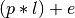

Prefijos, Tarifas, Bonos¶
En esta sección se explican los modelos de datos de prefijos, tarifas, bonos y su interrelación para obtener precios de las llamadas:
Prefijos¶
En esta tabla se guardan los prefijos conocidos por la aplicación y que pueden asignarse a las tarifas.
Los campos de esta tabla son los siguientes:
- Prefijo
- Campo de texto donde se define el prefijo.
- Tipo de prefijo
Tipo de prefijo que también determinará el tipo de la llamada cuando se encuentre este prefijo. Los valores posibles son:
- Nacional fijo
- Nacional móvil
- Internacional
- 900 Entrada
- Red inteligente
- Destinación
- Campo informativo que se muestra en el detalle de llamadas de las facturas.
- Activo
- Solamente se buscarán prefijos que estén activos.
Tarifas¶
Las Tarifas permiten definir los precios de las llamadas de tipo VOZ y SMS.
Existen dos tipos de tarifas:
- Ventas
- Las tarifas de tipo venta calculan precios de venta al cliente. Cada recurso define la tarifa de venta que se aplicará a las llamadas realizadas por dicho recurso.
- Compras
- Las tarifas de tipo compra calculan costes de las llamadas. Cada perfil de importación define una tarifa de compra, que se aplicará en todas las llamadas importadas mediante dicho perfil.
Las tarifas están formadas por los siguientes modelos de datos o tablas:
- Tarifa
- Básicamente define el nombre de la tarifa y el tipo (compra o venta). También define la unidad de medida (minutos o segundos) con la que se expresan los precios, a efectos de normalizar los segundos empleados en la duración de las llamadas y el precio de la tarifa, que puede estar referido a una unidad de medida diferente.
- Versión de tarifa
Cada tarifa puede tener varias versiones de tarifa. Define un intervalo de fechas de validez de la tarifa y si está activa. De este modo, es posible calcular precios de llamadas con la tarifa vigente en una fecha dada.
Cada versión también define un margen de venta. Cuando los precios de las llamadas están definidos en los ficheros CDR, estos precios son precios de coste de las llamadas. Para calcular el precio de venta, se utiliza este margen porcentual. Al definirlo en la versión, es posible volver a validar llamadas y aplicar el margen vigente en una fecha dada. Solamente se aplica en llamadas con precios incluidos en el CDR. Para el resto de llamadas, se ignora.
- Elemento de tarifa
Cada versión de tarifa puede tener varios elementos de tarifa. Define los coeficientes que se aplicarán para calcular el precio de una llamada, en función de la duración y el prefijo. Define los siguientes campos:
- Prefijo
- Precio
- SMS
- Precio establecimiento de llamada
Cálculo de precios¶
El procedimiento que se sigue para el cálculo de precios de una llamada es el siguiente:
Durante la validación de llamadas se encuentra el prefijo y el elemento de tarifa aplicables.
El cálculo del precio de una llamada de voz es el siguiente (p = precio, l = duración de la llamada, e = establecimiento de llamada):

El cálculo del precio de una llamada de SMS no depende de ninga duración, por lo que el precio es directamente el valor del coeficiente SMS del elemento de tarifa.
Zonas¶
Las Zonas son básicamente agrupaciones de prefixos. Una Zona está formada por un nombre y una lista de prefijos.
Se utilizan en la definición de bonos. Por ejemplo, es habitual definir bonos para una zona formada por prefijos de países europeos.
Bonos¶
Los Bonos definen minutos (u otras unidades de tiempo) que se bonifican y no se cargan.
Cada recurso (móvil o fijo) posee su propia lista de bonos.
En los bonos pueden definirse los siguientes campos.
- Tipo de Bono
Indica en qué tipo de llamadas se aplicará el bono. Los valores son los mismos que los del Tipo CDR definidos en las llamadas:
- VOZ
- SMS
- DATOS (habitualmente no se utiliza)
- Destinaciones máximas
- Indica el número de destinaciones distintas a las que puede llamar un teléfono. Sirve para evitar posibles usos fraudulentos en locutorios, etc. El valor por defecto es 0, que significa sin límite.
- Zonas
- Lista de las zonas (prefijos) en los cuales se aplicará este bono.
- Duración máxima
- Define el número de unidades de tiempo que entrarán en el bono. Por ejemplo, un bono con una duración máxima de 1 minuto bonificará los primeros 60 segundos de llamadas efectuadas a prefijos comprendidos en la lista de zonas.
Nota
Los bonos se aplican en el momento de facturar las llamadas. El contaje de tiempo bonificable se realiza sobre el conjunto de llamadas asignadas a una factura.